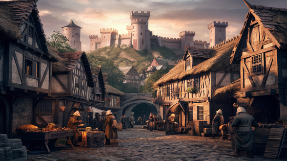
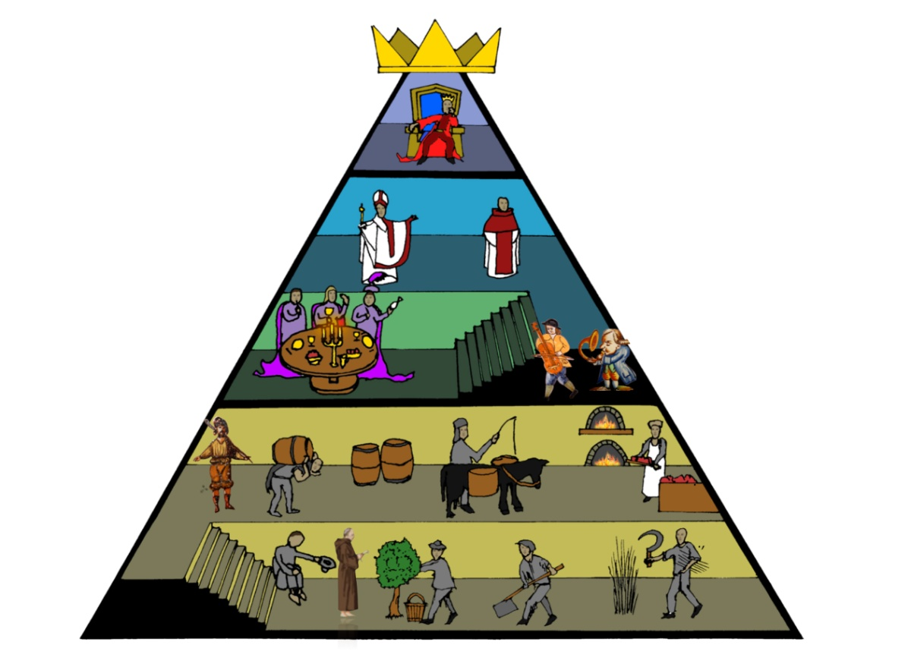
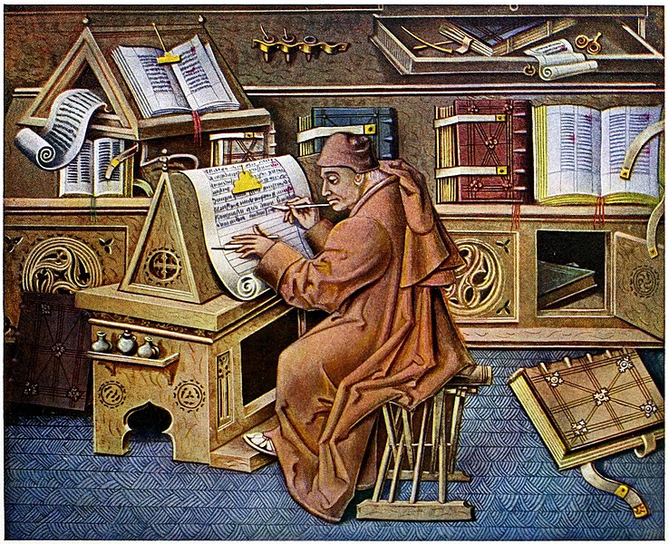

¿Qué sabemos de la Edad Media?
Ha llegado el momento de estudiar el periodo histórico en el que nació nuestro héroe, la Edad Media. A continuación veremos durante qué siglos transcurre (cronología), cómo era su sociedad y algunos de los rasgos de las obras literarias de esta época.

¡Vamos allá!
Cronología
La Edad Media es un periodo histórico que abarca desde la caída del Imperio Romano en el siglo VI hasta el descubrimiento de América a finales del siglo XV (es decir, desde el año 500 hasta el 1500).
La sociedad medieval
El modelo social medieval se llama feudalismo, el cual consiste en un sistema de obediencia y dependencia entre un señor y su vasallo; es decir, el vasallo obedecía a su señor a cambio de que este lo protegiera. La sociedad se hallaba dividida en tres estamentos o grupos sociales:
- Los nobles: a la cabeza de los cuales estaba el rey. Poseían la mayor parte de la tierra (la principal fuente de riqueza en la época), tenían numerosos privilegios y ejercían el poder. Su función en la sociedad era la de dirigirla y defenderla a través del uso de las armas.
- El clero (monjes y clérigos): también tenían posesiones y privilegios. Su misión social era la salvación de las almas y el establecimiento del comportamiento moral correcto. En esta época se le daba mucha importancia a la religión, hasta el punto de hablar de teocentrismo o mentalidad teocéntrica, la cual sitúa a Dios como el centro del universo y de la vida.
- El pueblo llano: personas sin posesiones ni privilegios. Trabajaban la tierra de los señores y la Iglesia.
A partir del siglo XII aparece una nueva clase social, la burguesía, que vive en las ciudades y se dedica al comercio y la artesanía.
La sociedad medieval suele representarse mediante una pirámide como la que tenemos aquí abajo. Observa al rey en la cúspide, a los grandes nobles y eclesiásticos debajo de él, y en la base al pueblo llano.

Ahora que ya tenemos claro cómo se organizaba la sociedad, podemos profundizar en la cultura y literatura medieval.
La cultura y la literatura medieval
El saber y el conocimiento estaban muy vinculados a la Iglesia, sobre todo a los monasterios, donde se copiaban los libros a mano y se encontraban las principales bibliotecas. Poco a poco, cada vez más nobles tendrán preocupaciones culturales, como el rey Alfonso X, el sabio, creador de la Escuela de Traductores de Toledo, o su sobrino Don Juan Manuel, autor de una conocida colección de cuentos titulada El conde de Lucanor.

Oralidad y anonimia. Durante la Edad Media pocas personas sabían leer y escribir. Esta hacía que la literatura se transmitiera de modo oral. Los poemas y narraciones se acompañaban normalmente acompañados de música. Este modo de transmisión, junto a la poca importancia que se le daba a la autoría de una obra, tuvo como consecuencia que la mayoría de las obras sean anónimas.
Los dos grandes temas de las obras medievales son la religión y la guerra. Estos temas están en relación con las dos clases sociales dominantes y su función social: los nobles y la guerra, por un lado, y el clero y la enseñanza de la doctrina cristiana, por otro.
Comprobamos lo aprendido con este test
Podemos completar nuestros conocimientos sobre la Edad Media viendo el siguiente vídeo.
Pulsar sobre la imagen para ver el vídeo:

¡Ya estamos listos para pasar al siguiente apartado: El Poema de mío Cid!